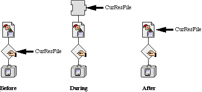

|
|
The Component Manager may change the current resource file in the resource
search path. This is a bug and will be fixed as soon as possible.
[Dec 01 1992]
|
What, Me Worry?
In general, the bug documented here will not be a problem for most applications
(Don't worry, be happy), because most of the time the component will already be
in memory or doesn't have to be loaded, and most applications leave the
resource search path set to the topmost file. Here are a couple of questions to
help you understand if this bug pertains to you:
- Do you use the Component Manager?
- Do you keep more than one resource file open and change the current resource path (that is,
CurResFile)?
- Do you open components at a time when you depend on the current resource path being set to something other than the topmost file?
If you've said yes to all of the above questions, write a check payable to Jim
Reekes for 33 percent of the amount of taxable income declared on your Federal
Income Tax statement. Then continue reading this Technote to find out if this
bug will byte you. Otherwise, take a vacation, you've been working too hard.
Back to top Que pasa?
When the call _OpenComponent is made, the Component Manager may need
to load the component's code. To load the Component, the component's resource
file must be opened and closed. A side effect of this may be to change the top
of the Resource Manager's search path. To open the component's resource file,
the Component Manager calls _OpenComponentResFile. It then loads the
component's code, and calls _CloseComponentResFile. The Resource Manager
will set the current resource search path to the top most file, which will be
the map that was at the top of the path prior to opening the component.

Figure 1. Resource Search Paths
Back to top Whatsamatta U?
Figure 1 shows how the resource search path is configured during the course of
opening a component. The "before" path shows how the resource search path would
look for an application that has opened a resource file and then set the top of
the resource search path to be itself. Remember the way the Resource Manager works?
The top of the search path is searched first when calling _GetResource,
and then, if the resource is not found, the search is continued at the next file
down in the search path. If an application is opening resource files, it may wish
to avoid inadvertently getting resources from that newly opened file. For example,
let's say you have opened a resource file that contains sound resources but your
application also has sound resources and you don't want to get the wrong one at
the wrong time. So you may wish to protect yourself by setting the search path
to begin at the application level to exclude the open resource file above it by
using _CurResFile. This way whenever you call _GetResource
you'll be sure to only get sound resources from your application.
When a new resource file is opened, by default the resource search path is set
to start at this file. This is a good thing. Then when that file is closed, the
Resource Manager will set the top of the search path to the next file. This may
be a bad thing if you don't want resources to be loaded from this file. This is
exactly what is happening when a component is loaded by the Component Manager.
The Component Manager may need to load the code resource from the component's
resource file. This is the "during" path shown in the Figure 1. Once the
code resource has been loaded, the Component Manager will close the resource
file. This is the situation shown in the "after" path of the figure.
The lesson to learn is that opening a component may change the current resource
search path. You can open a component by calling any component's method. Now you don't
need to save and restore the resource path around every component call, but when you use
_OpenComponent you should protect yourself. Additionally when you use the
Component Manager's trap _OpenComponentResFile it will change the resource
search path just like _OpenResFile. So you may wish to preserve the
resource search path yourself around this call too. Below is an example of
the code you may wish to use:
oldResFile = CurResFile();
c = OpenComponent(aComponent)
UseResFile(oldResFile);
|
One potential side-effect of this is when you use a component and don't know
it. QuickTime, for example, is based on components. QuickTime installs graphic
procedures to support _DrawPicture. If a picture contains a compressed
image (JPEG, for example), it may cause the image decompression component to be
loaded and possibly change the resource search path. If you know you are
supporting QuickTime image compressed images using _DrawPicture,
you may need to save and restore the resource search path around it.
Back to top References
Inside Macintosh, Component Manager
Inside Macintosh, Resource Manager
Back to top Downloadables
|

|
Acrobat version of this Note (76K).
|
Download
|
|